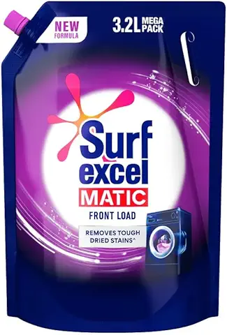

Surf Excel Matic Front Load Liquid Detergent 3.2 L Refill, Designed for Tough Stain Removal on Laundry in Washing Machines - Mega Pack
₹ 500.
Easy & better dissolution: Being a liquid detergent it dissolves quickly in the high water level environment of top load washing machines|| reaches stains effortlessly and leaves no residue on clothes
Machine Care: Its designed to produce foam as per washing machine type that ensures no clogging and choking of pipes and reduces scaling issues
Color Care: It removes tough stains in machines but retains original color of the fabric